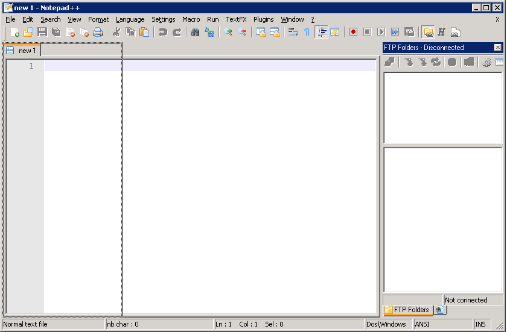

Texto original
Sugiere una traducción mejor
| Anterior: Menú contextual | Elementos GUI |

Notepad ++ admite lo que se llama una ventana acoplable. Forman parte de la interfaz gráfica, pero puede moverlos y elegir colgarlos a cada lado de la ventana principal (ventana anclada), o en modo flotante (ventana repuesto). Para cambiar la ubicación de una ventana acoplable, haga clic y arrastre la barra de título alrededor de la ventana. Cuando lo arrastre cerca de cualquier borde de la ventana principal, se verá un rectángulo que indica que la ventana se anclará si lo suelta. Se colocará en ventanas separadas si no se alcanza la marca de posicionamiento.
Puede cambiar el tamaño de las ventanas flotantes como cualquier otra ventana arrastrando sus bordes, pero para cambiar el tamaño de una ventana acoplable, debe arrastrar el borde adyacente a la ventana principal. Puede haber varias ventanas acoplables agrupadas. Si este es el caso, solo se muestra una de las ventanas, y las otras son accesibles mediante una barra de pestañas debajo de la ventana acoplada visible. La selección de un elemento en la barra de pestañas oculta la ventana visible y muestra la ventana correspondiente de la barra de pestañas. Puede reconocer las ventanas acoplables en la barra de pestañas mediante su icono.